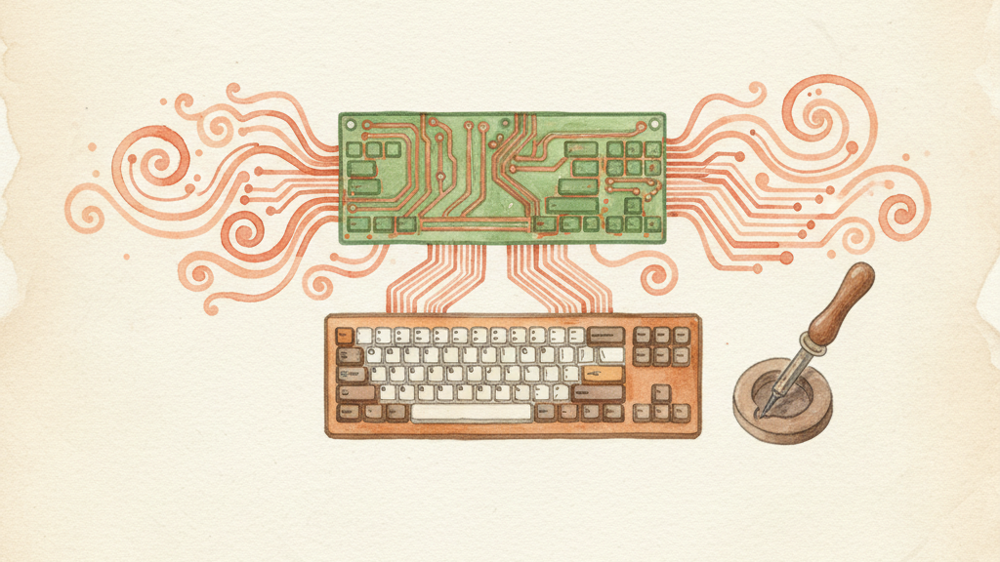

If you use a custom mechanical keyboard — a split, ortholinear, or compact layout — KeyPath can import your keyboard's physical layout so the overlay matches what you're actually looking at. The overlay shows your keys in the right positions, with the right sizes, in the right arrangement.
KeyPath indexes over 3,700 keyboards from the QMK firmware repository. If your keyboard runs QMK, chances are it's already in the database.
┌─────────────────────────────────────────────────┐
│ Search QMK Keyboards │
│ ┌─────────────────────────────────────────────┐│
│ │ corne ││
│ └─────────────────────────────────────────────┘│
│ │
│ > Corne (crkbd) │
│ Corne Cherry v3 │
│ Corne Chocolate │
│ Corne LP │
└─────────────────────────────────────────────────┘Select your keyboard and KeyPath downloads the layout definition. The overlay updates immediately to show your physical key arrangement.
These keyboards ship with pre-built layouts — no import needed, just select from the layout picker:
| Keyboard | Type | Keys |
|---|---|---|
| Corne (crkbd) | Split | 42 |
| Sofle | Split | 58 |
| Ferris Sweep | Split | 34 |
| HHKB | Compact | 60 |
| Lily58 | Split | 58 |
| Planck | Ortholinear | 48 |
If your keyboard is in this list, you don't need to import — it's already available in the overlay's layout picker.
If your keyboard isn't in the search index, you can import directly from a GitHub URL:
info.json on GitHub (in the QMK firmware repository) Example URL:
https://raw.githubusercontent.com/qmk/qmk_firmware/master/keyboards/crkbd/info.jsonKeyPath fetches the layout definition and optionally downloads the default keymap for accurate key labels.
When importing, you can configure:
| Option | What it does |
|---|---|
| Keyboard type | ANSI, ISO, or JIS — determines which key code table to use |
| Layout variant | Some keyboards have multiple layouts (e.g., with/without encoder) |
| Custom name | Name this layout in the picker (defaults to the QMK keyboard name) |
The import brings in your keyboard's physical layout — the positions, sizes, and arrangement of keys. It does not import your QMK keymap (which keys do what). KeyPath handles key behavior through its own packs and layers system.
QMK info.json KeyPath overlay
┌──────────────┐ ┌──────────────┐
│ Key positions │ ──import──→ │ Physical key │
│ Key sizes │ │ arrangement │
│ Key labels │ │ in the overlay│
└──────────────┘ └──────────────┘
Your remaps, layers, and packs work the same
regardless of which physical layout you use.This means you can switch physical layouts without losing any of your key configurations. Your packs, layers, and custom rules stay the same — only the visual representation changes.
Imported layouts are cached locally at ~/Library/Caches/KeyPath/qmk/. If you import the same keyboard again, KeyPath uses the cached version. Delete the cache folder to force a fresh download.
My keyboard isn't in the search:
Layout looks wrong:
Keys are in the wrong position:
info.json has unusual coordinates, some keys may appear shifted. Report this as a bug.